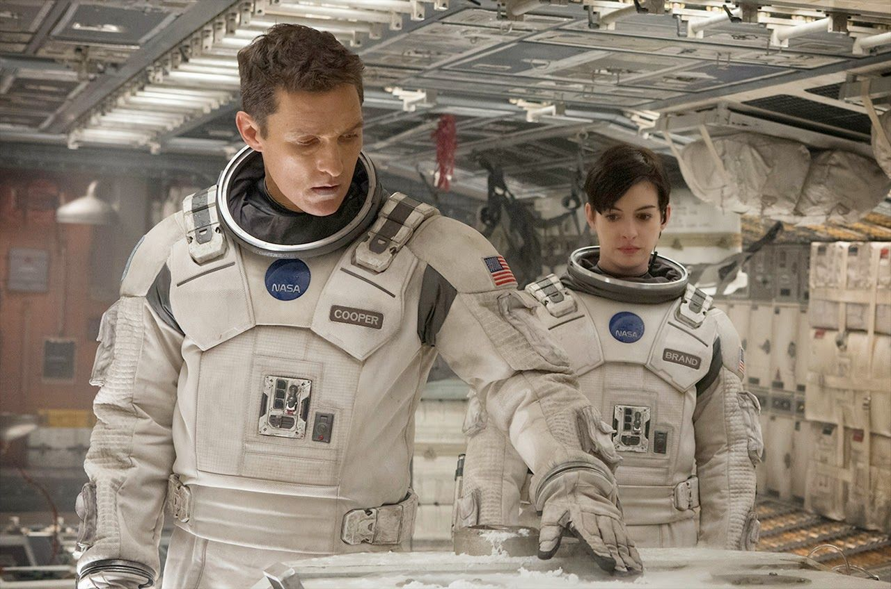

Один из лучших фантастических фильмов, которые я смотрел, - это Интерстеллар.
Он довольно длинный, но я пересматривал его несколько раз с удовольствием.
О фильме "Интерстеллар"
Научно-фантастический фильм

Обзор
Когда засуха, пыльные бури и вымирание растений приводят человечество к продовольственному
кризису, коллектив исследователей и учёных отправляется сквозь червоточину (которая
предположительно соединяет области пространства-времени через большое расстояние) в
путешествие, чтобы превзойти прежние ограничения для космических путешествий человека и
найти планету с подходящими для человечества условиями.